Team SWELDD
Introduction to IT, Assignment 2
Team Members
Personal Information, Profile and Ideal Jobs
Jordan Draganoff
Student Number: S3818714
Hi, my name is Jordan. I was born in the late 1990’s and grew up in the large country town of Bundaberg, Queensland. I enjoy an active lifestyle and love to travel, hike and go jet-skiing. I graduated high school in 2013 and have been working in my parent’s business in the areas of sales, marketing and web development to name a few. In 2018, I decided to pursue my dream and started on my journey to become an IT professional.
Myers-Briggs Style Test
Extroversion>Introversion by 12%
Sensing>Intuition by 3%
Thinking>Feeling by 47%
Perceiving>Judging by 3%
Source: Humanmetrics.com. (2019). Personality test based on C. Jung and I. Briggs Myers type theory. [online] Available at: http://www.humanmetrics.com/cgi-win/jtypes2.asp [Accessed 10 Sep. 2019].
Learning Styles Test
Auditory: 20%
Visual: 40%
Tactile: 40%
Source: Humanmetrics.com. (2019). Personality test based on C. Jung and I. Briggs Myers type theory. [online] Available at: http://www.humanmetrics.com/cgi-win/jtypes2.asp [Accessed 10 Sep. 2019].
Big 5 Personality Test
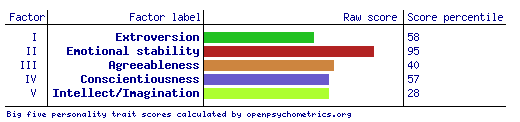
Source: Openpsychometrics.org. (2019). Big Five Personality Test. [online] Available at: https://openpsychometrics.org/tests/IPIP-BFFM/ [Accessed 10 Sep. 2019].
The results of the online tests outline that I’m a visual/tactile learner, have high emotional stability and have a preference for thinking rather than feeling. These results point out that while I do have good emotional stability, I may struggle with understanding others emotions. The results such as my preference for extraversion and agreeableness indicate that other team members would be happy with my behaviour as part of a team. When forming a team, it would be beneficial to find other members with a similar learning style of visual/tactile as this would likely affect communications preferences and sharing of useful resources throughout the group.
Ideal Job
Business Analyst - Ecommerce
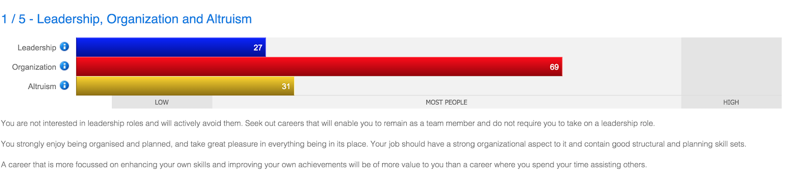
Source: SEEK. (2019). [online] Available at: https://www.seek.com.au/ [Accessed 03 Sep. 2019].
This job is calling for a business analyst to help a commercial wholesaler replatform their current ecommerce system to the newest version of Magento. This position appeals to me as I currently have experience in website development and am somewhat familiar with Magento. This job pays up to $150,000 for it’s 12 month contract. This type of work appeals to me as I love to travel; this kind of high paying short contract work will allow me to travel more.
This job is calling for a person with great business and management skills/experience. It also favours someone with experience in B2B ecommerce and Majento. For me to pursue a job such as this one, I would first have to gain more experience in a business analyst position. It would also be greatly beneficial for me to learn and get more comfortable with the Magento ecommerce platform.
I will first need to gain some experience working as a business analyst. The job position of Junior Business Analyst would be a great to gain experience as often the junior position doesn’t require nearly as much experience. Once I have gained enough work experience in lower position, I would have a much higher chance of securing a contract for a high paying business analyst position. It would also be greatly beneficial for me to become more familiar with common software used in the B2B selling environment.
Francis Dharmasiri
Student Number: s9356452
My name is Francis Dharmasiri a Sri Lankan born Australian. I migrated to Australia in 1990 and lived in Melbourne from then to 2010. now I live in Bunbury, WA. I have 3 children and I am a proud grandpa of 6 grandchildren all of whom live in Melbourne.
I started my work in Australia in the hospitality industry and eventually in year 2000 started a company in facilities management that I am managing to date.
My hobbies are mainly reading, and my favourite topic is Philosophy, but I like keeping in touch with all the developments in the field of computing, including software and hardware. I have been interested in the field from the time BASIC (Beginners All Purpose Symbolic Instruction Code) language came out in the 80’s. I am glad that now I have some time to pursue that interest in IT and do this degree in IT for my personal satisfaction and If possible to do some contract work in the field of systems security and penetration testing.
Myers-Brigs Style Test
My Type INFJ
Introvert(50%)
iNtuitive(88%)
Feeling(25%)
Perceiving(1%)
Because you appear to have marginal or no (1%) preference of Judging over Perceiving, characteristics of more than one personality type may apply to you: INFJ and INFP.
You have moderate preference of Introversion over Extraversion (50%)
You have strong preference of Intuition over Sensing (88%)
You have moderate preference of Feeling over Thinking (25%)
You have a slight preference of Perceiving over Judging (1%)
INFJs are distinguished by both their complexity of character and the unusual range and depth of their talents. Strongly humanitarian in outlook, INFJs tend to be idealists, and because of their J preference for closure and completion, they are generally "doers" as well as dreamers. This rare combination of vision and practicality often results in INFJs taking a disproportionate amount of responsibility in the various causes to which so many of them seem to be drawn.
INFJs are deeply concerned about their relations with individuals as well as the state of humanity at large. They are, in fact, sometimes mistaken for extroverts because they appear so outgoing and are so genuinely interested in people -- a product of the Feeling function they most readily show to the world. On the contrary, INFJs are true introverts, who can only be emotionally intimate and fulfilled with a chosen few from among their long-term friends, family, or obvious "soul mates." While instinctively courting the personal and organizational demands continually made upon them by others, at intervals INFJs will suddenly withdraw into themselves, sometimes shutting out even their intimates. This apparent paradox is a necessary escape valve for them, providing both time to rebuild their depleted resources and a filter to prevent the emotional overload to which they are so susceptible as inherent "givers." As a pattern of behavior, it is perhaps the most confusing aspect of the enigmatic INFJ character to outsiders, and hence the most often misunderstood -- particularly by those who have little experience with this rare type.
(INFJ stands for Introvert, iNtuitive, Feeling, Judging and represents an individual's preferences in four dimensions characterising personality type, according to Jung's and Briggs Myers' theories of personality type.)
INFJ Learning Style
An INFJ’s interest in learning a subject is related to the question, “Is it good for people?” The more they see a topic to be beneficial to others, the greater their interest in the topic and the greater their desire to actively engage in it. Their interest in studying the material is motivated by their desire to find solutions to people-related issues.
INFJs easily take in information when a significant part of it is devoted to the topic’s relevance and connection to people. They also learn easily if the knowledge they receive significantly expands the boundaries of their understanding and opportunities for application in a given area, and appeals to their feelings or moral values. They are able to quite easily comprehend material even when it consists of information that lacks significant logical flow. For example, learning the rules of the road may be no more difficult for an INFJ than grasping a theory. They are capable of independently learning and understanding new material.
INFJs are capable of mechanical memorization, but the amount retained this way is less than from memory based on understanding. INFJs are capable of accurately reproducing received information, especially if they associate it with any feelings.
INFJs are able to actively apply acquired knowledge and skills to their work. They can apply them in concrete assignments or further develop them in a given direction. Working with material they have learned, understood, and internalized brings them great enjoyment.
INFJs have a high level of tolerance to high levels of learning related stress, but they prefer to evenly distribute their efforts when learning new material and avoid last-minute cramming.
INFJ Learning Style is improved When:
Material is delivered on a theoretical basis, especially as it relates to the humanities and social sciences
They work independently with the study material
They participate in group work with the material (can be a good supplement to independent work)
The same material is repeatedly presented (improves retention)
Material is delivered from different viewpoints and using varied examples (improves retention)
Material is complex (often increases their drive to learn it)
Learning is systematic (e.g., an organized degree or certification program)
Visual aids and active learning methods are used
Material is delivered at a moderate pace
Source: Humanmetrics.com. (2019). Personality test based on C. Jung and I. Briggs Myers type theory. [online] Available at: http://www.humanmetrics.com/personality/infj [Accessed 11 Oct. 2019].
Big 5 Personality Test
Source: Openpsychometrics.org. (2019). Big Five Personality Test. [online] Available at: https://openpsychometrics.org/tests/IPIP-BFFM/results.php?r=3.5,4.2,5,5,4.6 [Accessed 5 Oct. 2019].
How this will help the group
The results of the online tests will reveal to the group about my personality , it’s strong points and weak points thus helping them to be able to know me better to interact and work with me better.. I think these tests are a good general purpose indicator for employers and others to know why a person is the way they are..
Ideal job
My ideal job would be to be a Systems Security analyst in order for me to achieve this I will need to complete the Information technology Degree that I have currently undertaken and then do many more Study programs including CompTIA Cybersecurity analyst + Certification, for me to meet the criteria needed as described below
Create specific protocols that audit file changes such as updates, deletion, additions and moving
Penetration testing and monitoring of digital assets
Risk analysis to identify any security issues that could lead to lost or stolen data
Monitoring security alerts to patch software such as operating systems with the latest versions
Prevent intrusions using current security hardware and software
Identify security breaches and take action to stop them and prevent them in the future
Implement the right software and hardware into current and future network environments
Define enterprise level security policies and actively enforce these procedures
Train employees to understand security and implement the right strategies
Work with law enforcement and vendors to manage security threats
After the completion of study, I will then need to focus on gaining hands on experience in dealing with the above criteria in a real working environment. So, it's a long journey to achieve this goal.
However, it is not my desire to obtain a full-time job but to be able to secure contract work. Like in the examples below
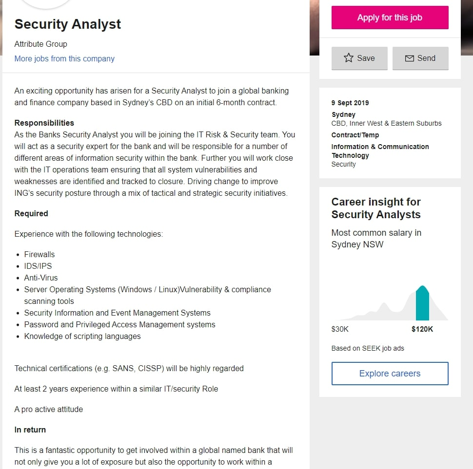.
https://jobs.blackcatdata.com/categories/688/
Suki
My name is Susika ‘Suki’ Sumanasuriya, student number: S3620271. I was born in Sri lanka but migrated to Australia when I was 12, I am bilingual and can speak 2 languages (english & sinhala), my favorite pastime includes watching tv shows & movies. My interest in IT has been a lifelong obsession, ever since I was a kid, I always had a particular interest in technology over other things. I currently have no actual experience in IT apart from the IT electives i took during my grade school years. I am very happy to be part of the SWELD group, and hope to do the very best.
Test results:
Myers-Briggs test
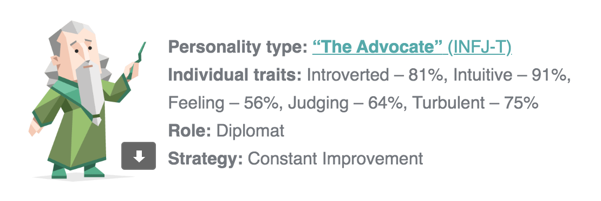Learning style test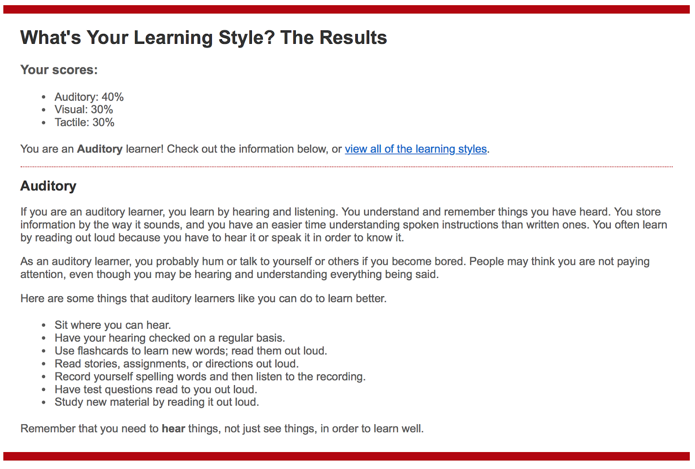
Career Recommendations
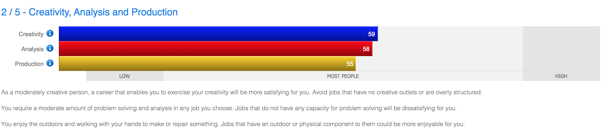 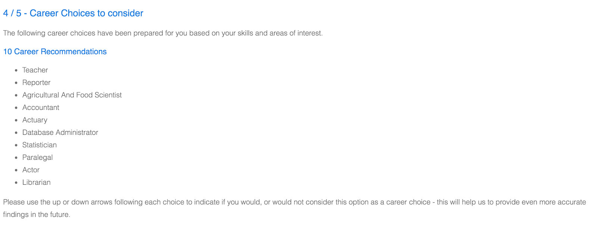These tests have shown what my true personality is, it’s something I have never directly contemplated about but i think these personality tests will prove useful when I am working in a team environment, for example the career test prove that my need for leadership is low but my need for organization is high so my role in a team could include helping to organize the necessary objectives in regards to solving a problem.
Ideal job
My ideal job would be to someday be a Research Scientist specialising in Machine Learning like the advertisement posted at seek.com.au (Link and Spashot is below). The position is meant to help device novel techniques powered by Machine Learning algorithms to explore minerals and metals in a much more sustainable way. This role requires the researcher to have at least 4 years of experience in researching novel machine learning algorithms, preferably a Masters in Computer Science and expert level proficiency in a variety of programming languages. Inorder for me to qualify for this job I would have to finish two courses I am currently studying (IPT and ITT), and then finish the Bachelors in Information Technology, afterwards find a junior research job and get a Masters in Computer Science as i am doing my job and then hopefully in a half decade I would qualify for this job.
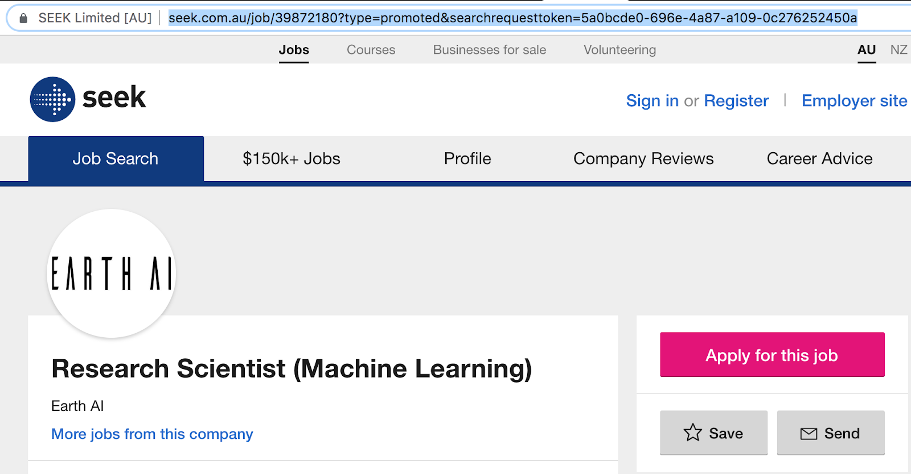
Sophie
Hey, I'm Sophie (RMIT student number s3802023)! I've lived on each side of this wonderful country that we call Australia, but currently call Sydney home. I graduated from high school in 2016 and have been enjoying my time since binge watching Netflix and trying nearly every snack that my local servo has to offer!
I Suppose that my interest in IT was influenced from an early age, with my father working in the Royal Australian Navy and then in the mining industry in Western Australia. I was always interested in how things work and what new technologies were being brought out to help with whatever he was doing. After he left the mining industry, I was lucky enough that he let me see some of what he was doing, by this time it was in robotics and I loved it.
At the moment I have little to no IT experience (apart from the small amount of high school coding that I did), but I am excited to see everything to know and learn.
I chose to come to RMIT University because I knew that with the endless possibilities that the future can have, I wanted to be with a University that could help me understand it the best.
What I expect to learn from my studies is a better understanding of IT and a more in depth knowledge of what is out there both at the moment and in the future.
Ideal Job
Personal Profile
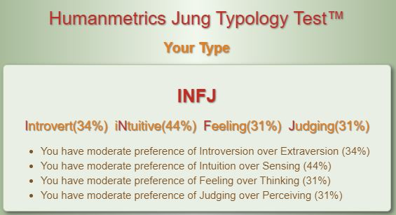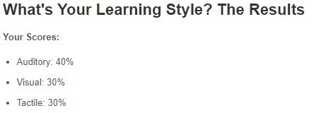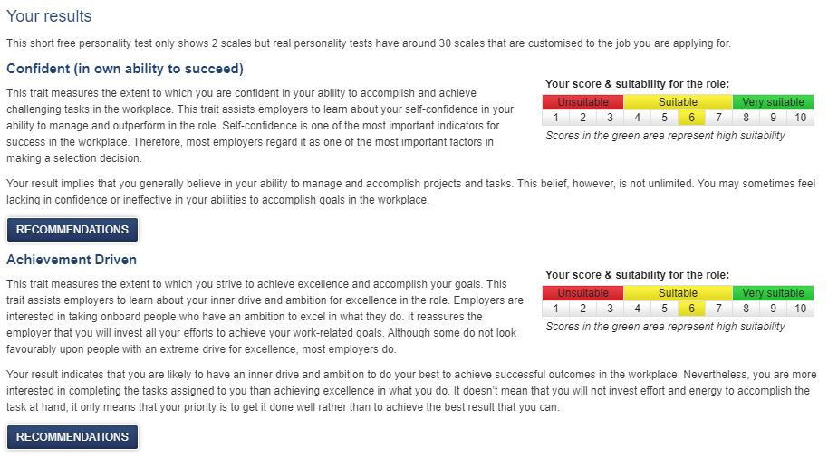
Chris Evans
My name is Chris Evans (RMIT Student number S3813726), I am 32 years old and live in Newcastle NSW. I have a beautiful wife (Caroline), a nine-month-old son (Austin) who keeps us very busy and a dog (Leo). My hobbies include sports such as baseball, golf and touch football. I also dabble in amateur home brewing, barbecuing, gardening, fishing and camping. I am currently trying to involve myself in any kind of climate change and renewable energy movements I can. I feel strongly about reducing the adverse effect we are having on the environment and have a personal goal to be involved in making a difference. My interest in IT began in high school in 2003 where I did my first computing studies. I then pursued a career involving IT as an Electronic Communications Tech in the Air Force where for over 13 years I have progressed through the organisation from being a hands-on technician to a technical workforce manager. The further I progress in my career, the more managerial roles I undertake and the less technical knowledge I retain. I am studying IT to increase my knowledge and understanding of all things IT and in the process, limiting my skill fade. I am hoping to find a way to combine my interest of IT into my aspirations of environmental change. Whether that is through green energy technology advancements, sustainability with automation or networking household energy storage; only the future will tell.
My test results:
- Myers-Briggs result – Protagonist ENFJ-T
- Learning Style – Visual 45%
- Creativity – Ability to carry large quantities of information and manage effectively, desire to change the accepted norm and to push for continual improvement.
How this will help the group: The results of my tests indicate that I need to be open and accepting of team feedback and take this on board for future interactions. I also should start as soon as I can when making big decisions as I can lose confidence if time gets away from me. I digest things better if they are visually intuitive and I like logical information structure to ensure I can comprehend our progress.
Ideal Jobs comparison and contrast.
- Jordan - Business Analyst
- Francis - Systems Security Analyst
- Suki - Research Scientist in Machine Learning
- Sophie - Data Analyst
- Chris - Project Developer
Ideal Job Questions...
What common elements are there, if any?
There is a common theme of Analyst across three of our members. All roles are different and across varying fields.
What differentiates each position from the others, if anything?
The industry that the individual has an interest in seems to be the differentiating factor.
How similar or different are your carer paths across the group?
The career paths are vastly different from each other, this shows the diversity that the IT industry offers.
Tools
GitHub repository:
www.github.com/Sweldd/sweldd.github.io
Member GitHub sites:
C-Evans GitHub
www.jordan-draganoff-rmit.github.io
www.francis-rmit.github.io
www.sukilala.github.io/MP/
www.sophiewalker.github.io/My-Profile/
communications: Discord

Group report :
Canvas / GoogleDocs.PDF
- Sweldd Report
Canvas / GoogleDocs.PDF - Sweldd charter
Canvas / GoogleDocs.PDF - Sweldd
timeline
Industry Data
- What are the job titles of your groups ideal jobs?
- Jordan - Business Analyst
- Francis - Systems Security Analyst
- Suki - Research Scientist in Machine Learning
- Sophie - Data Analyst
- Chris - Project Developer
- How do each of these rank in terms of demand from employers?
- Jordan - 165 job listings
- Francis - 173 job listings
- Suki - 58 job listings
- Sophie - 45 job listings
- Chris - 278 job listings
- From your groups ideal jobs, can you identify a set of skills required for these jobs?
- Analytical skills
- Research
- Communication Skills
- Microsoft Windows
- Project management
- Business Analysis
- How do IT-specific skills in your required skill set rank in terms of demand from employers? Our IT-specific skills are all in the top 10 skills in demand from employers. We have two skills in the top 5. We consider that to be quite beneficial for our future careers.
- How do the general skills in your required skill set rank in terms of demand from employers? Our general skills come in at number 1, 10 and 17. This seems to be an even spread with highly sought-after skills and skills that aren’t so desired.
- What are the three highest ranked IT-specific skills which are not in your required skill set? SQL, Javascript and JAVA.
- What are the three highest ranked general skills which are not in your required skill set? Problem Solving, Organisational skills and writing skills.
- Having looked at the Burning Glass data, has your opinion of your ideal job changed? Why or Why not? No, while there are some good and not so good aspects of the skills in demand for our job roles, we consider our skills a good mix across the board. It could be very rare to require all the top-ranking skills and in some cases, you might need all of the top-ranking skills. It depends on the unique role that you go for. When it comes down to it, we all want to do what we are passionate and interested in doing. The Burning Glass data is handy; it has not changed our opinion of our ideal jobs.
IT Work
Interview an IT professional.
- Please tell us about your IT work. What exactly do you do?
I work as an IT Specialist. My work consists of a range of various projects of which primarily focus on the development and implementation of systems to replace old systems to allow for more simplification and automation. This is because the old systems mostly consist of older command line interfaces.
- Please tell us about the industry you work in.
I work for an IT multinational corporation known as IBM. This company primarily offers cloud computing services which consists of a range of services from database storage to artificial intelligence like machine learning. The company also provides other services such as leasing equipment to smaller companies.
- What other kinds of work do you have to do?
I am undergoing a project administrator role for a part-time project. This is where I am in charge of organizing meetings, allocating tasks and creating meeting minutes. Meeting minutes are a summary of what happened during a meeting and of what each individual has completed since the meeting prior to the current one. This is done on Atlassian’s JIRA.
- Who are the different people you interact with in your work? Please tell us about them.
So far I have interacted with a few members of the small team that I work with. I have interacted with project managers, business analysts, software developers and database administrator. The current team is part of the support team representing the system that is currently used. This is for the Asia Pacific region. Because of this I have also interacted with people from Malaysia who were similar roles as previously mentioned.
- Please tell us about your interactions with other IT professionals
My interactions primarily consist of the team I work with for the past projects. These professionals have had various personalities who all work differently. For example, some have had excellent time management whilst others have lacked in time management.
- What about your interactions with clients or investors?
I have had no interactions with clients or investors. I have only had interactions with my current team and other teams of whom I have helped produce new functions for.
- What aspect of your work do you spend the most time on? Please tell us about these.
As the agile methodology consist of working on iterations, this would consist of designing, developing and testing the iterations. Primarily, the development side will be what I work on the most. This section involves producing the system that was initially designed.
- Which aspects of your work do you find most challenging?
The most challenging aspects of work would have to be the development phase of some projects as this involves coding. Coding can consist of many bugs or errors that can occur in which I have to find the solution to fixing it or checking stack overflow for assistance.
- Finally, can you share an example of the work you do that best captures the essence of the IT industry?
What best captures the essence of the IT industry would have to be working with individuals who seek a piece of software to be produced and working with developers in order to produce that software. In my experience, this would consist of using data visualisation to produce dashboards for which other teams will use to allow for simplification. This involved me interacting with the product owner – of whom represents what the end users would like in the dashboard.
What kind of work is done by the IT professional?
The IT professional works as an IT Specialist, he works for an IT multinational corporation known as IBM. This company primarily offers cloud computing services which consists of a range of services from database storage to artificial intelligence like machine learning. The company also provides other services such as leasing equipment to smaller companies. His work consists of a range of various projects of which he primarily focuses on the development and implementation of systems to replace old systems to allow for more simplification and automation. This is because the old systems mostly consist of older command line interfaces. He is currently partaking in a project working as a project administrator, he is in charge of organizing meetings, allocating tasks and creating meeting minutes. Meeting minutes are a summary of what happened during a meeting and of what each individual has completed since the meeting prior to the current one. This is done on Atlassian’s JIRA.
What kinds of people does the IT professional interact with?
He interacts with a few members of the small team that he works with. He has interacted with project managers, business analysts, software developers and database administrator. The current team is part of the support team representing the system that is currently used. This is for the Asia Pacific region. Because of this he has also interacted with people from Malaysia who were similar roles as previously mentioned. His interactions primarily consist of the team he works with for the past projects. These professionals have had various personalities who all work differently. For example, some have had excellent time management whilst others have lacked in time management. He has had no interactions with clients or investors. He only had interactions with the current team and other teams of whom he helped produce new functions for.
Where does the IT professional spend most of their time?
As the agile methodology consist of working on iterations the professional spends most of his time working on iterations, this would consist of designing, developing and testing the iterations. Primarily, the development side is what he works on the most. This section involves producing the system that was initially designed.
What aspect of their position is most challenging?
The most challenging aspects of work for the professional would have to be the development phase of some projects as this involves coding. Coding can consist of many bugs or errors that can occur in which he has to find the solution to fixing it or checking stack overflow for assistance.
What does the Professional think of the IT industry.
According to the professional what best captures the essence of the IT industry would have to be working with individuals who seek a piece of software to be produced and working with developers in order to produce that software. In his experience, this would consist of using data visualisation to produce dashboards for which other teams will use to allow for simplification. This involved him interacting with the product owner – of whom represents what the end users would like in the dashboard.
IT Technologies
Cybersecurity
By Francis Dharmasiri
In today’s connected digital world cybersecurity is one aspect that cannot be ignored and is one of the most important areas of technology that the connected world cannot live without.
What does it do?
Cybersecurity is the means of protecting computer systems, networks and programs from unauthorised access, changing, or destroying sensitive information, extorting money from users or interrupting normal business process. Cybersecurity is critical for business organisations and governments that need to run critical applications 24/7 without downtime or interruptions to its services. This day and age implementing effective security measures are becoming increasingly difficult because of the number of devices that are deployed are more than the human population and the attackers are becoming more and more innovative. For a cybersecurity system to work there are a lot of factors that must come to gather and work to gather. A normal cybersecurity system has many layers of protection in place in the form of software, networking, inscription data access restrictions and data structure and database fragmentation with different access controls to mention a few. But it is also the responsibility of the users to comply with the basic data security principles by adhering to practises like using strong passwords and securing the passwords not giving passwords to anyone, not even to your closest family or friends and being aware of email attachments and other unsolicited messages that can carry hidden software like viruses and trojans . What ever we may do we must always be aware that there is always a chance of our systems getting hacked and this must be in the forefront of every employee and user that is a part of a critical service provider and know that each person carries the responsibility of security of the information that is available to them , being unaware of this responsibility may cause you to face legal action and loss of job and in some cases even jail time. So, what does this all mean? all these critical actions and responsibilities and the software and the hardware in conjunction creates a part of the cybersecurity layers that are in place to protect systems from attacks.
The responsibility of systems security and monitoring and implementing these mentioned regulations in a company or any organisation falls on the Systems administrator and Systems security analyst , it is the expertise , knowledge and capabilities of these individuals that will ensure that these systems are in place and all staff are trained and briefed on there responsibilities and are advised what to do and what not to do in any given situation . It is also there responsibility to make sure that all the software that runs on a system is patched and scanned for any backdoors or any other vulnerability and implement 24 / 7 monitoring systems using software as well as the security of the server rooms and other infrastructure that belongs to the computer network. Their responsibility does not end there as the individuals responsible for probably the most valuable asset of a company being the data that is stored in these servers they must monitor all traffic that comes in and out of these servers and implement necessary measures to know who is accessing what and if any anomaly is detected to have the system raise alarms and have systems that can isolate the affected areas whiles making sure that the day to day flow of data or business is not interrupted. The have a lot of tools of the trade that they use to achieve these tasks like port scanners, firewalls , firewall rules, hardware firewalls and air gapping critical information servers.
What is the likely impact
The likely impact of not taking cybersecurity seriously could mean a lot of grief to your customers and users and big losses to your business or corporation. And if we take into consideration the government servers, essential services like electricity and other critical services then the impact could be drastic. If a hacker were to shut down the electricity grid with a virus or sum such instrument you can imagine the losses and the chaos this can put a city in to , the worst scenario would be a hacker getting access to the defence system , I am sure you can imagine the terror that can unleash on a country or be it the world depending on what country’s system the hacker managed to penetrate. As you can see a lack of cybersecurity is not an option it is an ongoing war against the intruders and a continuous innovative journey for those who are defending the systems. As interesting and challenging it may seem the responsibility of defending a system is a very serious and a very stressful business as you can imagine.
How will it affect you
The effects of irresponsible cybersecurity can affect all walks of life today, as we are all connected to this world wide web of digital spaghetti. So, as a user, it is your responsibility to take care of the things that are under your control if you don’t want to be affected by the lack of awareness or irresponsibility. And it is the endeavour of the service providers and their security experts and server manager to make sure that the day to day consumer is not affected by the digital war that is raging in the background without them even knowing. That “them not knowing” and keeping the consumer safe is the effect that every corporation and government is trying to achieve, and this is also the force that is driving this industrys innovation to the next level. How ever it is foolish to think that humanity will sail along in this digital ocean without any effect or incident but achieving that perfect safe digital cybersecurity is the dream of the industry.
Machine Learning
By Susika 'Suki' Sumanasuriya
What does it do?
What is the state of the art of this new technology?
Machine learning enables machines to acquire new skills by analysing copious amounts of data and looking for patterns within those data, this essentially makes them better at a task simply through trial and error. This is made possible by giving a machine training and testing sets (data) of the very thing we would want a machine to be better at, an example could include facial recognition; through machine learning a machine can learn from the two sets, one set (the training set) to sift through to look for patterns within the data, in this case the data could be faces of random individuals and another set (the testing set) could include an extra set of people completely separate and unique from the training set to verify those new found patterns, if for some reason the verification comes to a halt, the machine learning algorithm makes an automatic adjustment to its own algorithm and tries again till it gets better over time through trial and error and eventually if the algorithm is upto the task, after the initial training period the machine should be able to recognize different faces.
What can be done now?
Currently one of the uses of machine learning algorithms includes the enhancement of the customer experience for example some enterprises use machine learning powered chat-bots that has been trained on different so called chat-bot datasets to provide its customers efficient and quick self - service without the need for staff based service, and as the technology matures it is said that more businesses both large and small will adopt this technology for the benefits of efficiency and cost saving.
What is likely to be able to do be done soon (say in the next 3 years)?
According to some computer scientists, machine learning algorithms would soon be able to generalize its abilities in detecting patterns as the current methods requires an enormous amount of data to excel at specific singular tasks (i.e. chatbots), if an algorithm can generalize its learned abilities from one data set to another ( i.e. reading) it will be a more efficient use of resources and ability. Also current learning algorithms are prone to so called adversarial attacks where simulated signals implanted within the data set can trick the algorithm and could cause it to malfunction, it is hoped that solutions for these types of attacks will be designed within the next couple of years.
What technological or other developments make this possible?
On a technical level, more processing power in the near future should aid machine learning algorithms to generalize its abilities, as well as advances in data storage and management, this will aid in further understanding of the depth of current data-sets and this will enable researchers to extrapolate relations between different tasks so they can design much more proficient and generalizable algorithms. As for adversarial attacks better more robust algorithms will have to be implemented, it is said that by embedding human biases into these algorithms it could help machine learning algorithms to identify these signals and purge them out of the data-set before any malfunction occurs, although for the time being this method is unproven for the most part.
What is the likely impact?
Advanced machine learning algorithms could have profound impacts on the job market as algorithms begin to replace human workers, for example in the United States, the increase in automation over manual labour is on pace to take close to 35% of jobs within the next couple of decades, also according to some economists the economic benefit gained by implementing these new and novel technologies will only benefit the rich as the monetary benefit in cost saving and efficiency won’t necessarily trickle down. While the majority of the workforce will still be employed in 20 years, the creation of new jobs will slowly stagnate noticeably as attrition gradually leads to fewer people in the workplace, this could in turn make economic inequality worse and further divide the gap between the poor and the rich. According to a report published by ONS (Office of National Statistics) of England, 3 most at risk jobs are waiters, shelf fillers and elementary sales occupations.
How will this affect me?
As according to what is mentioned above, this technology will displace many people in the workforce in turn possibly disrupting the financial and or economic livelihood of many people. According to some researchers machine enabled job loss could have profound socio economic issues that is hard to predict, and some tech leaders such as elon musk has gone far as to recommend a Universal Basic Income or UBI to guarantee these displaced people a livable wage. It is yet to be seen how these advanced algorithms will affect the economy.
Robots
By Sophie Walker
Robots are machines capable of completing complex series of actions automatically. They can be guided by external programming or the programming can be embedded within and can be used autonomously or semi-autonomously, ranging from humanoids through to medical operating robots, therapy robots and also for the military. With the different uses for robots, the continual developments being made in robotics vary greatly, such as the TOSY Ping Pong Playing Robot, the advances in military equipment like Unmanned Aerial Vehicle drones and the emerging nanorobotics. With various methods such as, evolutionary robotics, where a number of different robots are submitted to testing and those with the best performance are submitted as a model to create subsequent “generations”, as well as developmental robotics, which involves the tracking of changes and developments within a single robot in the areas of problem-solving and other functions. According to a Forrester report, ‘robots will eliminate 6 percent of all jobs in the United States by 2021. McKinsey’s assessment on the matter is more extensive, with them believing that by 2030 one third of American jobs could be more automated. According to a new report in 2019 by Oxford Economics, “How Robots Change the World”, up to 20 million manufacturing jobs could be lost to robots by 2030, in line with the assessments made by McKinsey. The report suggests that in Australia, South Australia is most vulnerable to the future robot rollout.
Although there are a significant changes in society that robots will influence in the future, there will also be new careers and fields of technology that will evolve as a result. With the advancements in medical and rehabilitation robots, researchers at Carnegie Mellon were able to experiment with millimetre sized robots to perform heart surgery, and engineers at Autodesk were also able to help medical researchers to develop nano-robots that could be injected into cancer patients to kill cancer cells.
Raspberry Pis, Arduinos, Makey Makeys and other small computing devices
By Jordan Draganoff
A Raspberry Pi and Arduino UNO Device. Source: Self
Small computing devices such as the Raspberry Pi, Arduino and Makey Makey are challenging what many people think a computer is and should be used for. This report will cover these three small computing devices and discuss what they are, what is their impact and how they affect me and the people around me.
Just a few years ago if someone told you that you could buy a computer mother board complete with CPU, Memory and networking for just US$35 (Raspberry Pi Foundation, 2019) they would walk away laughing. If you then told them that this cheap computer could support two 4k displays, or over 16 million pixels, there’s no way they would take you seriously. But the aforementioned device is commercially available today from Raspberry Pi. The smallest Raspberry Pi device actually starts from US$5 and with the addition of an SD card for storage, operating system, keyboard, mouse and display it is a fully functioning computer system. The Raspberry Pi’s CPU is based on the ARM architecture which is a common architecture used for smartphone CPU’s. ARM based CPUs are known for being more compact and energy efficient than their x86 counterparts (Android Authority, 2014). A Raspberry Pi device will typically be loaded with a GNU/Linux based operating system such as Raspbian. The Raspbian operating system comes with education and programming software such as Python and Java (Raspberry Pi Foundation, 2019). As Raspberry Pi boards are the size of a credit card or smaller, they can and are often used to power other devices ranging from VPN routers and compact web servers to miniature weather stations and drones. The Raspberry Pi isn’t the only kid on the block when it comes to small computing devices to power the world's latest technology and gadgets though.
Arduino is an electronics platform circuit board that comes in multiple shapes and sizes much like the Raspberry Pi. The Arduino is different as it cannot support an operating system like the Raspberry Pi can, instead it uses a microcontroller that is programmed by a connected computer. Arduino programming is based on the C++ programming language but is simplified by the Arduino Programming Language and the Arduino Software package (Arduino, 2019). Arduino boards can be used to power a huge number of projects including automatic lighting, fingerprint readers and basic robots (Ubuntu Pit, 2019). Arduinos are great for projects that do not require the full processing power of a computer to perform lots of complex tasks at the same time. For people with less technology knowledge or experience that wouldn’t be comfortable setting up a Raspberry Pi or Arduino, but still want to get involved in the small computing craze, there is another device called the Makey Makey which allows you to turn basically any object into an input source for your computer.
The Makey Makey doesn’t really fit into the category of small computing devices as it doesn’t really do any computing. It is a device designed by two students at the MIT Media Lab (Makey Makey, 2019). Makey Makey is a small circuit board sold with a set of alligator clips and probes. The clips and probes are used to connect the circuit board to everyday objects, such as bananas or play-doh. The device connects to a computer via USB cable and is an input source, kind of like a keyboard. If the connected objects are at least slightly conductive, and a circuit is made through it, it will register a key press on the computer. The Makey Makey device was designed to be simple, as a way to introduce people to the basics of electronics and circuits, rather than be a standalone computing device like the Raspberry Pi or Arduino.
The introduction of small computing devices, namely Raspberry Pi and Arduino, have been widely adopted by technology enthusiasts and professionals alike and really questions how big a computer should be and how much it should cost. A great example of how small computing devices have been widely adopted is the increased use of Chromebook laptops in schools. These are used as an example as Chromebooks share similar properties to Raspberry Pis as they are a low cost, low power alternative to another product. In the United States there has been a massive shift from traditional laptops running Apple or Microsoft software to devices running Google software (New York Times, 2017). I feel that this shift will affect other parts of the computing world such as data servers and home computers as people and companies alike will discover the lower cost, and arguably better, alternatives. Devices like Arduino have also been successful by providing people an affordable entry into the electronics and programming circles. The popularity of Arduino can been seen all over the internet with people creating videos and writing about their projects. This has been a great advancement as the electronics market shows huge potential for the future and I believe it will be more and more important that people have an understanding of how these things work. Devices like the Makey Makey help to bridge the gap where people are interested in computers and electronics but don't quite know how to get started. Once they are more comfortable, they may progress onto more complicated projects involving a Raspberry Pi or Arduino.
The introduction and use of small computing devices affects my daily life in multiple ways. As I’m a person that enjoys tinkering with things to get them working, I have already found multiple uses for these kinds of devices. I currently use Raspberry Pi type devices for things including an ad-blocking DNS server, VPN Wi-Fi access point and a home media server. I also use an Arduino powered 3-D printer and have been toying with ideas for other Arduino projects. These small and inexpensive devices remove many previously set barriers about what someone can create and do with technology at home. I feel that this has a positive affect on both myself and my family and friends around me as projects and ideas designed for entertainment or to simply make life easier can now be realised with some tinkering and determination.
References
- Singer, N. (2017). How Google Took Over the Classroom. The New York Times. [online] 13 May. Available at: https://www.nytimes.com/2017/05/13/technology/google-education-chromebooks-schools.html.
- Raspberrypi.org. (2019). Buy a Raspberry Pi 4 Model B – Raspberry Pi. [online] Available at: https://www.raspberrypi.org/products/raspberry-pi-4-model-b/.
- Sims, G. (2014). ARM vs X86 - Key differences explained! [online] Android Authority. Available at: https://www.androidauthority.com/arm-vs-x86-key-differences-explained-568718/ [Accessed 3 Oct. 2019].
- Arduino.cc. (2019). Arduino - Introduction. [online] Available at: https://www.arduino.cc/en/guide/introduction.
- https://facebook.com/UbuntuPIT (2019). Top 15 Best Arduino Projects That You Can Build Right Now. [online] UbuntuPIT. Available at: https://www.ubuntupit.com/top-15-best-arduino-projects-that-you-can-build-right-now/ [Accessed 3 Oct. 2019].
- Makey Shop. (2017). About Us, Learn About Makey Makey’s Invention Kits - Makey Makey. [online] Available at: https://makeymakey.com/pages/about-us [Accessed 3 Oct. 2019].
Project Ideas
By Chris Evans
Our group had a variety of ideas for projects from assessment one in Introduction to Information Technology.
Jordan came up with a remote animal interaction device to entertain a cat while the owner was not at home. While he has expressed that he is not a ‘cat person’, it was a humorous read that made what could have been a boring project, enjoyable.
Suki went all out and provided a futuristic project by means of a ‘Carbon Dome’ capable of sustaining life on mars! He mentions important aspects such as how the Dome will be powered and how CO2 will be broken down.
Chris aimed for a sustainability inspired plant management system with remote monitoring capability. He was attempting to implement solar power as the power source and make amendments to the software on the fly.
Noting that this portion of the assignment emphasises problems that need to be solved, we will come back to these ideas in just a second.
On a recent holiday, one of our team members had the pleasure of undertaking a nocturnal wildlife tour of a National Park in Kakadu. The tour guide was a passionate local who spoke persuasively to the tourists about wildlife and environmental conservation. While he had the audience captivated with his heavily rehearsed dialogue, he would make reference to ‘the great Sir David Attenborough’ and attributed his knowledge of his ancestral land to excessive animal planet documentaries he would watch. Throughout the tour he bought the tourists attention to a cat he observed hunting a group of native birds in some long grass on the riverbank. He proceeded to regurgitate animal planet facts about feral and domesticated cats killing on average, about 75 animals per year. He continued to mention that many of Australian native species can’t withstand these levels of predatorial domination and will become increasingly at risk of extinction if the matter cannot be addressed.
This news was saddening to hear and only one aspect of a myriad of environmental statistics that may see our children not afforded the same wildlife experiences that we take for granted today.
This also got us thinking, the three ideas mentioned above from assignment one was, Jordan with his cats, Suki with his Dome’s and Chris with his sustainability aspect. That’s it, we have our project.
The pure and simple solution that we have for this issue is a ‘Remotely monitored and self-sustainable, domesticated cat indoor habitat’. This incorporating all three of our ideas to reduce the impacts of cats hunting native animals outside of the home.
Ideas we have come up with include creating a collar to track the cat’s movements within the home, heart rate and provide stimulus to the cat when needed. The household ‘dome’ could be managed by robotics or advanced software that would be able to conduct minor tasks such as, cat monitoring and behavioural cue identification, cleaning of any faecal matter, stimulating the cat when needed and providing nutrients and water as required. On the sustainability front, proper promotion and publicising of this project would incite interest amongst cat owners around the world and in turn be adopted or implemented. The result of the above points would have a positive impact on the general wellbeing of domesticated cats and in turn a change to the predatorial impacts that cats have on our native animals.
By far this is not a completely achievable project and it does require some technology advancements, hardware creating and software building. This is our little crack at tackling a larger problem with the various ideas that we as a group originally came up with. It has been an enjoyable topic to address and write about.
Feedback
Logged to SPARKPLUS by:
- Jordan
- Francis
- Suki
- Sophie
- Chris
Group Reflection
Jordan
What went well?
I feel like our chosen collaboration (Google Docs and Github) and communication (Discord) technology mix worked fairly well for our team, seeming it was our first time collaborating in this way.
What could be improved?
For future assignments it will be important to improve our organisation in regards to team meetings. Team meetings should be arranged in advance and documented better so that there is no confusion about when meeting will be held.
What was surprising?
I was surprised that we lost a team member very early in the assignment. Our team name was an acronym of our original team members last names, although we chose to keep it the same after losing our sixth member.
What have I learned about groups?
I have learned that all people are different and may prefer to work and communicate in different ways. Because of this, it is very important for the group to try their best to accommodate everyone's preferred work and learning styles.
How does the Github log reflect the groups work?
For this assignment, the Github log doesn’t necessarily reflect on everyone's actual contribution to the groups work. This is because we are using other collaboration technologies as well as Github. We are using Google Docs for our report PDF so that everyone can see and contribute to the document in real time, instead of using Github ‘pull’ and ‘push’ requests to get the latest version of the report. Our group website is hosted on Github pages, and any group member that has contributed to the website code will be acknowledged in the Github log.
Francis
What went well?
I think our collaboration effort went well , with the tools we chose like Discord and google docs. Discord helped us to have our group meetings and Google Docs helped us organise our Canvas documentation. And we used the Github repo updating And tracking our edits as specified in the assignment and to create our website.
What could be improved?
Better communications and understanding of the assignment specifications.
At least one thing that was surprising
Sudden disappearance of a group member
At least one thing that you have learned about groups
I learnt that communications, coordination and being respectful is the key to a successful and a conflict free group work experience.
How well the GitHub log reflects the activity of the groups work
I don’t think that the GitHub log activity will reflect very well on the groups activity as some of our members were still learning how to use Git, but the rest of the members were happy to step in and complete the tasks
Suki
What went well?
I feel like all the tasks were assigned without any issues from the very start and our use of google docs helped us keep track of everyone's submissions under one cohesive document. I would also like to mention Chris and Jordan for their quick thinking on how everything should be arranged and delegated, especially the timeline document created by Jordan helped us keep track of what part of the assignment should be finished by which date.
What could be improved?
There were some minor communication errors from the start, but as time passed, I feel like it it got much better but there is still room for improvement.
At least one thing that was surprising?
From the very start, almost everyone in our group was very resourceful and respectful of one another and were very responsible for their respective assigned tasks. The fact that there were no misunderstandings between the group members was refreshingly surprising.
At least one thing that you have learned about groups.
Communication is the most important element so there are no misunderstandings, I believe that our group communicated very well but there is room for improvement.
How well the GitHub log reflects the activity of the groups work.
I would say GitHub log reflects poorly on our group activity as it does not take into account the work done on our group Google document.
Sophie
What went well?
Assigning of the tasks and responsibilities in the beginning of working together. It was good to know what was going on during the processes from the start and what needed to be done and when.
What could be improved?
The communication of when meetings were could have been improved, making sure that everyone knows there was going to be a meeting the day before it were to happen might have helped.
At least one thing that was surprising.
What surprised me was how everyone has from such different walks of life, but still have an interest in IT.
At least one thing you have learned about groups.
Communication and respect will always be beneficial towards a problem free experience for everyone.
How well the GitHub log reflects the activity of the group’s work.
I believe that the GitHub log won’t reflect the activity of the group’s work very well as it doesn’t take into account the work the group has done outside of GitHub, such as Google Docs and Discord.
Chris
What went well?
I think as a group we assigned tasks effectively and everyone was willing to put their hand up and accept responsibility for completing them. We planned for meetings, gave it our best to make them and if anyone was unable to attend, they would let the group know prior to the commencement of the meeting. The team made their intentions clear from the beginning by signing a group charter that sets out the standards we planned to abide by for our fellow members.
What could have been improved?
The group was slow to initiate the assessment planning. There was initial contact with members but the first meeting and decisions on the collaboration tools were delayed. Once the group arranged and conducted a meeting on Discord, there was some confusion and communication issues using voice chat. The issues included, people speaking at the same time, people not speaking at all and personal IT issues. Another improvement would be the group meeting its timeline goals to ensure we stick to the plan and have enough time to finalise the assignment.
At least one thing that was surprising.
One surprising thing was that we lost a team member in the early stages and had to manage the workload with five members.
At least one thing you have learned about groups.
One thing I have learned about groups is to break the ice and get the team together for an initial meeting.
How well the GitHub log reflects the activity of the groups work.
How well does GitHub track our group activity? I don’t think it tracks it well at all. GitHub is only one aspect of the assignment and is the online repository of all of our work. As a team, we utilised Google docs, Canvas, Discord and GitHub. We have multiple documents that members have contributed to with online discussions in Canvas and on Discord that is not tracked in GitHub. I think GitHub accurately tracks the contributions of the members uploading the data to the site. To mitigate this issue, we tried running a GitHub demo for some of our less experienced members and this helped spread the load on the more experienced members.
Thanks for reading!
Back to Top